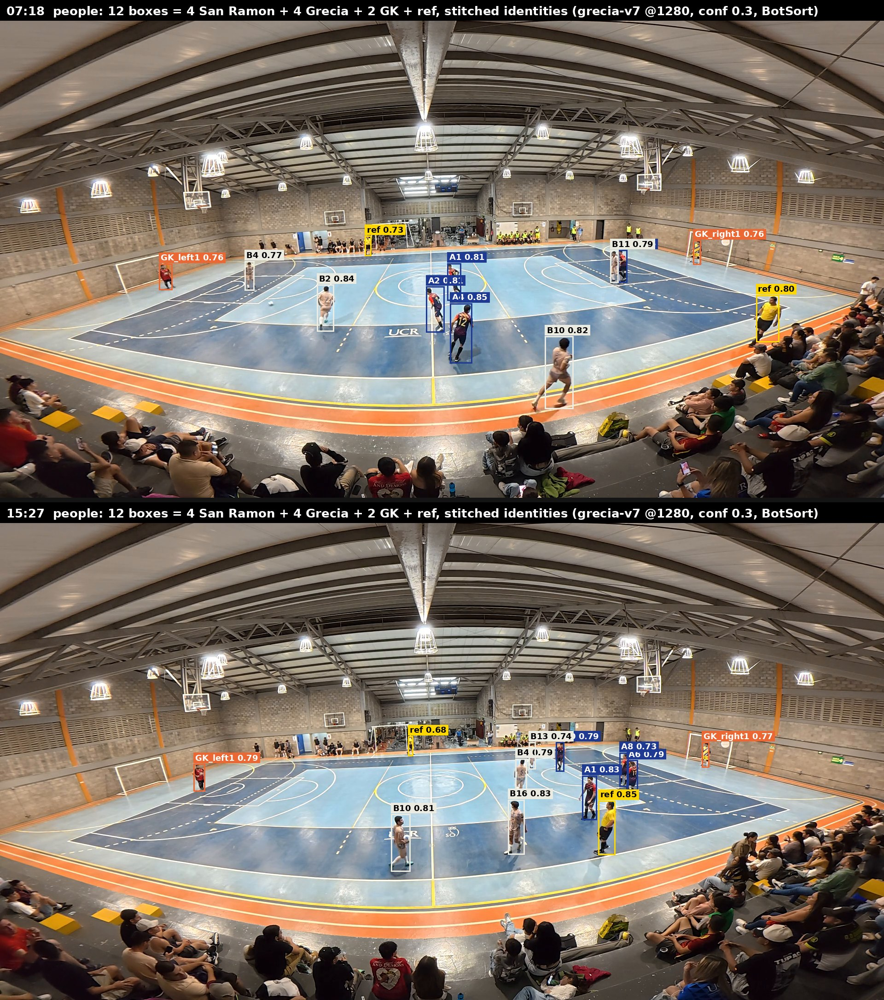

Universidad de Costa Rica · visión por computadora
San Ramón vs Grecia, 9 de mayo de 2026, primer tiempo (27 minutos). Detección, seguimiento y proyección a la cancha sin intervención manual.
La posesión es un indicador aproximado: cuadros en que el jugador más cercano al balón (≤ 2.5 m) es de cada equipo. Resultado real del tiempo: 3 – 1; el gol de Grecia no se detectó (ver límites).
Posición del balón en el momento del tiro. San Ramón ataca la portería de la izquierda; Grecia, la de la derecha. Pasa el cursor por cada marca.
Ocupación de los jugadores de campo durante el tiempo completo, en celdas de 0.5 m, relativa al máximo de cada equipo. Los porteros no se incluyen.
Por identidad de seguimiento (A1, B4, …), no por dorsal: una identidad dura entre 1 y 11 minutos y puede corresponder a más de una persona tras una sustitución. Trayectoria suavizada a 0.5 s antes de integrar; velocidad máxima con ventana de 1 s.
Cómo se obtuvo. Un modelo YOLOv8m de cuatro clases (balón, jugador, portero, árbitro) entrenado con 2 274 imágenes de cuatro partidos. Las personas se detectan a 1080p y se siguen con BotSort; el balón, de unos 15 px, exige un pase aparte sobre el video 4K a 2560 px. Una calibración de la lente convierte píxeles en metros con medio metro de error. Los equipos se asignan por el color de la camiseta y las pistas se enlazan en identidades.
Definiciones. Tiro: balón a ≥ 8 m/s dirigido a la portería desde ≤ 20 m. A puerta: dentro de la boca de la portería. Gol: tiro seguido de la formación de saque de centro. Distancia: integral de la trayectoria suavizada.
Lo que todavía falla.
Todo lo que se muestra se genera a partir de tres CSV y un JSON de resumen del primer tiempo, disponibles en el repositorio junto con el código.

Minutos 07:18 y 15:27: 4 + 4 jugadores de campo, dos porteros y el árbitro, cada uno con identidad y equipo.